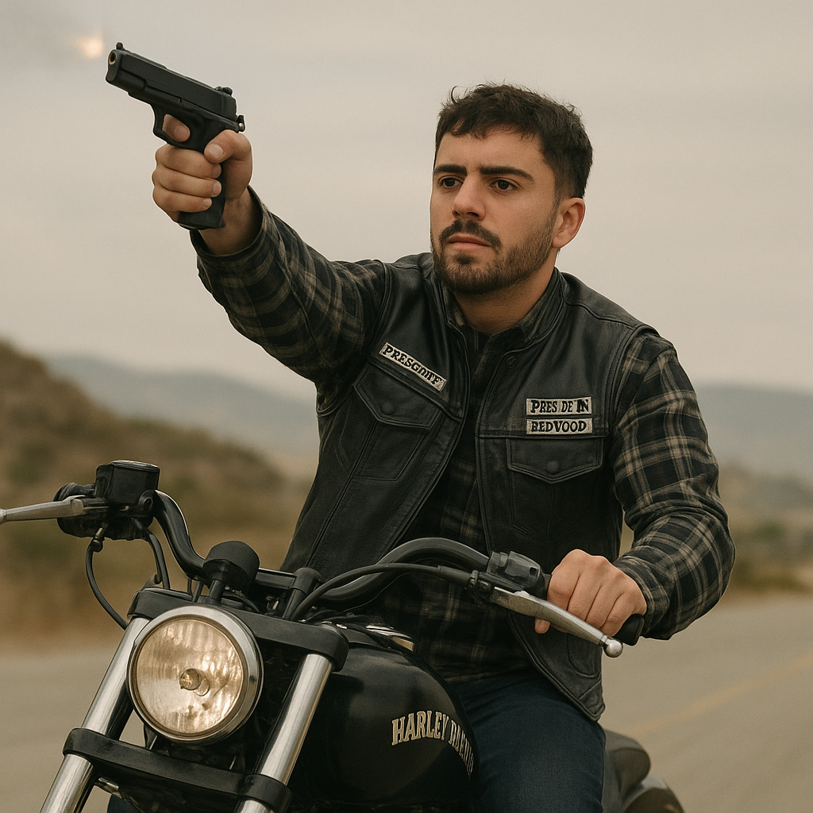

Sons of Anarchy es un club de moteros que cuenta con muchas filiales en los Estados Unidos. El local en Charming (localidad situada en el Condado de San Joaquín) es la sede original de Sons of Anarchy. durante la serie se abrevia en SOA, aunque frecuentemente se refieren al club como SAMCRO (acrónimo de Sons of Anarchy Motorcycle Club, Redwood Original)
